Welcome to the GitHub Copilot Workshop! In this workshop, you will learn how to use GitHub Copilot to explain and improve code. GitHub Copilot Chat allows you to interact with AI through a chat experience. Let's learn how to use GitHub Copilot through this workshop!

Today's Goals
- Understand the various features of GitHub Copilot
- Use Agent Mode to develop a new application from scratch
Prerequisites
- Visual Studio Code is installed
- You have a GitHub Copilot license
- You have a GitHub account
In this workshop, we will use the following GitHub repository:
Project URL: https://github.com/moulongzhang/2026-Github-Copilot-Workshop-Python
Step 1: Create a Repository from the Template
First, open the project URL above in your browser and create your own repository from the template:
- Open the project URL (https://github.com/moulongzhang/2026-Github-Copilot-Workshop-Python) in your browser
- Click the Use this template button in the upper right and select Create a new repository

- On the repository creation screen, enter a repository name and click the Create repository button

Once the template creation is complete, a new repository will be created under your GitHub account.
Step 2: Set Up the Development Environment
Use the repository you created to set up a development environment with GitHub Codespaces:
- Go to your repository page (
https://github.com/[your-username]/2026-Github-Copilot-Workshop-Python) - Click the green Code button
- Select the Codespaces tab
- Click Create codespace on main

So far, you have learned the basic ways to use GitHub Copilot in VS Code. Now let's actually develop an application.
In this hands-on session, we will develop a Pomodoro timer application. This application will have the ability to set work and break durations and manage a timer.
We aim to create an application with a UI like the one below.
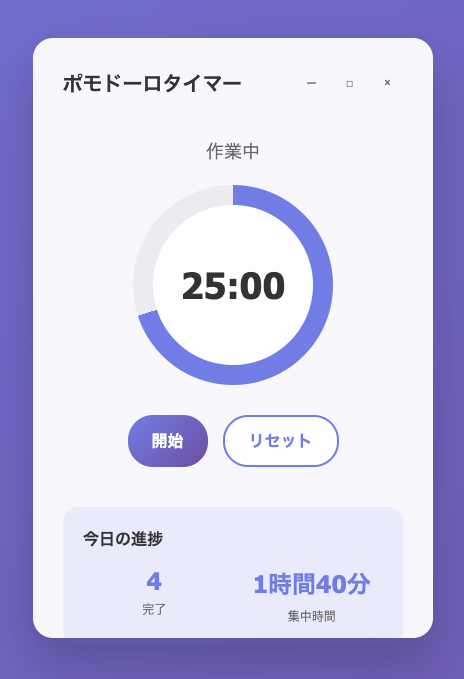
First, let's create a new Python file in VS Code. Since we want to create this as a web application, we'll use Flask. Let's name the main file "app.py".
Project Overview
We will create a web timer application for the Pomodoro Technique.
Required Features
- 25-minute work timer
- 5-minute break timer
- Start, stop, and reset the timer
- Progress display and statistics
- Browser notifications and sound alerts
- Responsive Web UI
Rather than jumping straight into implementation, let's first consult Copilot about the approach and design to follow. From here on, we will proceed entirely in Agent Mode.
Switching to Agent Mode
Select "Agent" from the Copilot Chat mode selector. The agent understands user intent and can execute tasks more autonomously.
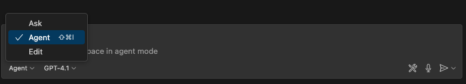

Design Consultation
When creating a web application with a UI like this, a useful feature is the ability to upload images to Copilot Chat. This allows Copilot to understand the UI image of your application.
First, save the UI image from the previous page as pomodoro.png in the project root. Then click Add Context in the chat input area and select "Image from Clipboard" or "Files & Folders...". Then select the UI image.


Once the image is uploaded, it will appear in Copilot Chat.
Now, try entering the following prompt.
I plan to create a Pomodoro timer web app for this project. The attached image is the UI mock for the app. Please propose an architecture recommendation for building this app using Flask and HTML/CSS/JavaScript.
Copilot will then suggest a recommended web application architecture.
If you see areas for improvement or points that haven't been considered in this architecture, go ahead and point them out. For example:
Considering ease of unit testing, please identify any improvements or additions needed in the current architecture.
Once the architecture design is finalized through this exchange, let's save the content to a file. This way, you can reference the same architecture content even when opening a new chat session.
The architecture has been finalized through our conversation so far. Based on our discussion, please create a file called architecture.md in the project root that summarizes the web application architecture proposal.
At this point, the UI mock and architecture design are finalized. Let's consider what specific features need to be implemented. We'll consult Copilot Chat about this as well. Be sure to attach pomodoro.png and architecture.md.
Please identify all the features that need to be implemented to create this Pomodoro timer application.
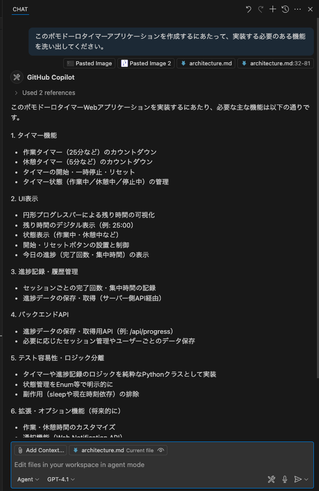
Refine this content through your conversation with Copilot. Once finalized, save this content to a file called features.md, just as we did with the architecture.
Thank you. That looks good, so please write the list of features to implement in a file called features.md.
Now, before we start implementing, a key tip for using Copilot effectively is to avoid trying to implement large features all at once. Instead, start with small features first. This improves the accuracy of the code Copilot suggests, allowing for smoother development.
Let's also consult Copilot about how to break down this application development into appropriate increments. Here, attach pomodoro.png, architecture.md, and features.md.
I want to implement this Pomodoro timer application incrementally. Based on the attached image, architecture, and feature list, please propose a step-by-step implementation plan with appropriate granularity.
When I tried this, Copilot proposed a plan consisting of 6 steps. If there's anything you'd like to change, go ahead and tell Copilot. Then, save this content to a file called plan.md so you can reference it later. Think about what prompt you should use to give this instruction.
With all the preparation in place, it's time to start implementing. Follow the implementation plan proposed in the previous step and implement features incrementally.
1. Preparing the Branch
Before starting implementation, let's create a working branch.
Step 1: Reset Staged Changes
Restore all currently staged changes back to the working directory:
git restore .
Step 2: Create a New Branch
Create and switch to the feature/pomodoro branch:
git checkout -b feature/pomodoro
2. Preparing the Project Structure
First, let's create the directory structure for the project according to our architecture.
Start by modifying the current project folder structure to support the architecture described in architecture.md. Move files and update configuration files as needed.
Then, attach pomodoro.png, architecture.md, and plan.md, and give Copilot the following instruction:
Please implement Step 1 of plan.md. If any existing files in this project need to be moved to different directories, please do that as well. If there are any additional considerations, please ask me.
In my case, Copilot came back with questions that needed consideration, as shown below. In such cases, provide the necessary information.
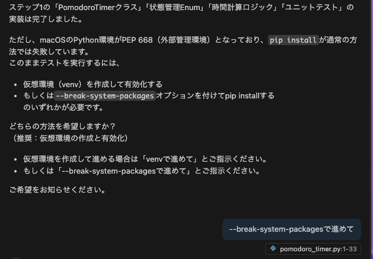
After that, Copilot proceeds with the Step 1 implementation. Once implementation is complete, Copilot will autonomously build the project and check for errors. If errors occur, it will make additional fixes to resolve them. This autonomous behavior is a key characteristic of Agent Mode.
Once implementation is complete, verify the following:
- Directory structure: Does it follow the recommended architecture?
- Base files: Have the necessary base files (app.py, HTML templates, CSS files, etc.) been created?
- Functionality check: Run a quick test to make sure there are no errors
Below is an example of my Step 1 implementation result. The state of your application at this stage will likely differ.

Before continuing with implementation, let's write unit tests for the features we've implemented so far. Writing unit tests ensures that changes in later steps don't break existing functionality.
If unit tests were already implemented in the previous step, you can skip this page.
Implementing Tests
Try running the following prompt.
There are currently no unit tests for the existing implementation. Please implement unit tests.
Copilot's agent will then ask for permission to execute commands to install unit test dependencies. Like this, the agent always asks the user for confirmation before executing any command. Click "Continue" to allow it to run the necessary commands.
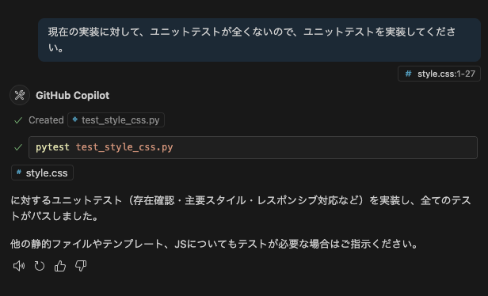
Copilot will then execute the command in VS Code's terminal and install the required dependencies. Similarly, for all subsequent commands, the agent will always ask the user for confirmation before execution. If an error occurs from running a command, the agent will make additional fixes to resolve it.
In the following steps, we will use Copilot features on GitHub.com and the Cloud Agent. Let's configure the necessary settings.
1. GitHub Advanced Security (GHAS) Configuration
Enabling the Code Scanning feature of GitHub Advanced Security allows you to automatically detect code vulnerabilities.
- Click the Settings tab in your repository
- Select Security → Code security from the left sidebar
- Click Set up in the Code scanning section

- Select Default (recommended)

- Click Enable CodeQL
This will enable automatic code scanning on push and pull request creation.
2. Enabling Copilot Features
Let's enable the Copilot features available on GitHub.
- Click your profile icon in the upper right of GitHub
- Select Copilot settings

Enable the following features:
- Editor preview features - Preview features for the editor
- Copilot CLI - Use Copilot in the terminal
- Copilot code review - Code review feature
- Copilot Cloud Agent - Autonomous coding agent
3. Enable Issues and Actions in Your Repository
⚠️ This step is only for users whose Issues or Actions are disabled. Skip this if they are already enabled.
Repositories created from templates may have Issues and Actions disabled by default. Since we'll use them in later steps, enable them if they're currently disabled.
Enabling Issues
- Click the Settings tab in your repository
- Check the Features section under General
- Check the box for Issues
Enabling Actions
- Click the Actions tab in your repository
- Click "I understand my workflows, go ahead and enable them" to enable
4. Creating a Personal Access Token (PAT) (Optional)
Create a Personal Access Token so that the Cloud Agent can operate within GitHub Actions.
Step 1: Create a Fine-grained PAT
Visit the following URL to create a new Fine-grained PAT:
https://github.com/settings/personal-access-tokens/new
Configuration:
- Token name: Enter any name you like (e.g.,
copilot-workshop) - Resource owner: Select your personal user account (not an organization)
- Repository access: Select Public repositories (select Public repositories even if adding to a private repository)
- Permissions: Enable Copilot Requests

After creation, make sure to copy the displayed PAT.
⚠️ Note: The PAT is only displayed on the screen immediately after creation. It cannot be viewed again after navigating away, so be sure to copy it at this time.
Step 2: Set as a GitHub Actions Repository Secret
Set the created PAT as a repository secret:
- Click the Settings tab in your repository
- Select Secrets and variables → Actions from the left sidebar
- Click New repository secret
- Enter the following:
- Name:
COPILOT_GITHUB_TOKEN - Value: Paste the PAT you just created
- Name:
- Click Add secret
Step 3: Verify Workflow Permissions
Verify the Actions workflow permissions so the Cloud Agent can automatically create Pull Requests:
- Click the Settings tab in your repository
- Select Actions → General from the left sidebar
- In the Workflow permissions section, verify that Allow GitHub Actions to create and approve pull requests is checked
- If not checked, enable it and click Save
This section is optional. Proceed if you have already learned the basic Copilot features and want to try more advanced implementations.
From here, let's implement the remaining features step by step as a free-form exercise.
Here are some tips that should be helpful.
When You Want to Give Instructions About the UI
If you want to give instructions about specific UI elements, you can upload a screenshot of the UI to Copilot so it can recognize those elements. When doing so, it helps to circle or draw arrows on the screenshot to clearly indicate which elements you're referring to.
Alternatively, you can upload two screenshots — one showing the current state and one showing the expected state — to have Copilot identify the differences and make the UI match the expected design as closely as possible.
When You Find Yourself Giving the Same Instructions Repeatedly
If you frequently give the same types of instructions when writing prompts or specifying context, you can have Copilot remember those instructions. Specifically, create a file called .github/copilot-instructions.md in your project and write the instructions there. When this file exists, Copilot automatically reads it and references those instructions in subsequent chats.
Below is a sample of custom instructions.
This project implements a Pomodoro timer using Flask.
The following are important files in the project. Please reference these files as needed when responding to user instructions.
- `pomodoro.png`: The UI mock for the application.
- `architecture.md`: The application's architecture document.
- `features.md`: The list of features to implement.
- `plan.md`: The step-by-step implementation plan.
You can also include project-specific commands such as build and test commands, and Copilot will automatically use them.
When Implementation Gets Stuck or You Can't Resolve a Bug
In such cases, try the following approaches:
- Instruct Copilot to output debug information, then have it analyze the output.
- Try a different model.
Let's commit the code you've created to the Git repository and push it to a remote branch. Here are two methods.
Method A: Using Terminal Commands
The traditional method of running Git commands directly in the terminal:
git add .
git commit -m "Add Pomodoro timer feature"
git push origin feature/pomodoro
Method B: Creating a Commit with Generative AI
Use Agent Mode to instruct Copilot directly to commit and push. Run the following prompt:
I've finished creating the feature. Please stage the code changes in git.
Then, please commit with an appropriate commit message and push the changes to the remote branch.

[Optional] Auto-creating GitHub Issues via MCP Server
Next, you can also use MCP Server to manage your implementation plan as GitHub Issues.
Please create GitHub issues for each step in plan.md.
This instruction causes Copilot to:
- Read the contents of
plan.md - Create individual Issues for each step
- Each Issue will include:
- Step title and detailed description
- Feature requirements to implement
- Acceptance criteria
- Appropriate labels and priority
This enables structured project management and agile development.
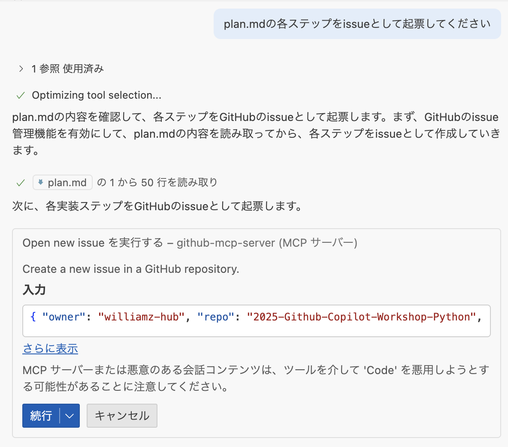
After pushing, let's create a Pull Request on GitHub.com and leverage Copilot's code review features.
Creating a Pull Request and Copilot Summary
- Go to your repository on GitHub
- Click Open a pull request
- On the Pull Request creation screen, click Copilot icon » Summary
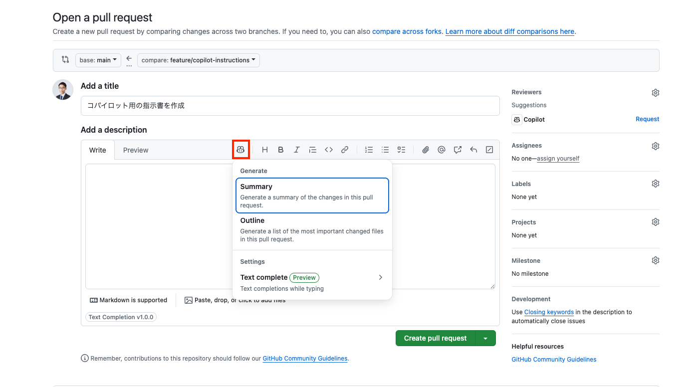
Copilot will automatically generate a summary of the Pull Request.
Assigning Copilot as a Reviewer
In the Reviewers section, assign Copilot to request a code review from Copilot.
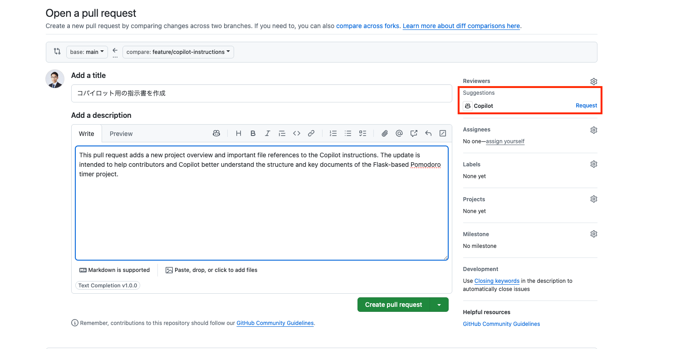
Reviewing Copilot Code Review Results
After the Pull Request is opened, you can view the Copilot Code Review results:
- Pull Request Overview: Summary of code changes
- Issues Found: Identification of potential problems
- Improvement Suggestions: Specific suggestions for improving code quality
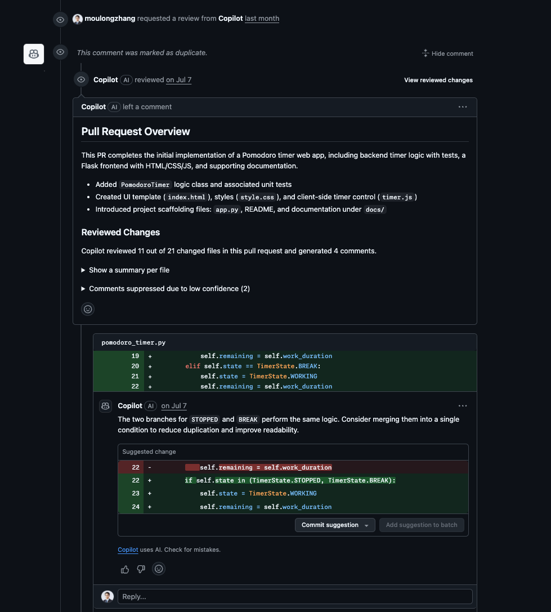
Static Vulnerability Scanning with GitHub Advanced Security
The Pull Request also displays results from GitHub Advanced Security (GHAS) static vulnerability scanning:
Reviewing Security Alerts
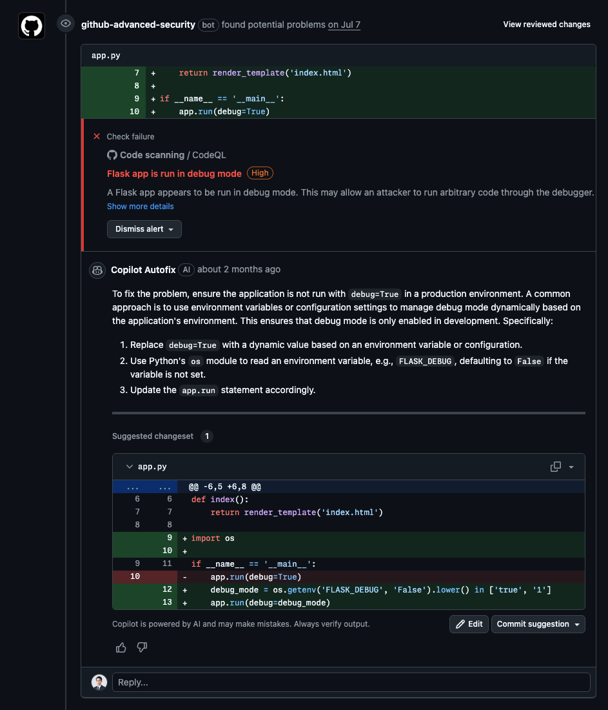
- High-severity Vulnerabilities: Critical security issues
- Copilot Autofix: AI-powered automatic fix suggestions
- Detailed Explanations: Vulnerability details and remediation methods
Check Results Details

Let's use the GitHub Copilot web interface to automatically generate improvement proposals as Issues and leverage the Cloud Agent.
Auto-creating Issues with GitHub Copilot
- Go to GitHub.com and click the Copilot icon in the upper right
- Verify that your repository is added to the Chat context
- Enter the following prompt:
Please create 3 issues for customizing the Pomodoro timer.
Pattern A: Enhanced Visual Feedback
Circular progress bar animation: Smooth decreasing animation based on remaining time
Color changes: Gradient transition from blue → yellow → red as time progresses
Background effects: Particle effects or ripple animations in the background during focus time
Test purpose: Measure the impact of visual immersion on user concentration
Pattern B: Improved Customizability
Flexible time settings: Choose from 15/25/35/45 minutes instead of a fixed 25 minutes
Theme switching: Dark/Light/Focus mode (minimal)
Sound settings: Toggle start/end/tick sounds on/off
Custom break duration: Choose from 5/10/15 minutes
Test purpose: Measure the impact of personalized settings on user retention
Pattern C: Gamification Elements
Experience point system: XP and level-ups based on completed Pomodoros
Achievement badges: Accomplishment system for "3 consecutive days", "10 completions this week", etc.
Weekly/monthly statistics: More detailed graph displays (completion rate, average focus time, etc.)
Streak display: Consecutive day count display
Test purpose: Measure the impact of gamification elements on motivation and continued usage
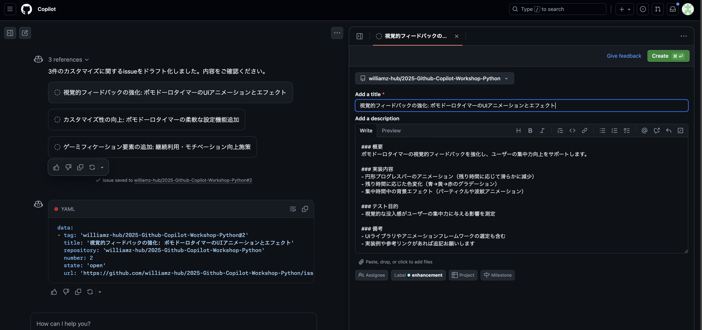
Creating Issues and Assigning the Cloud Agent
- Copilot will automatically generate 3 Issues
- Review the content of each Issue and edit as needed
- Click the Create button to create each Issue
- After navigating to the Issue page, select Copilot in the Assignees section to assign the Cloud Agent
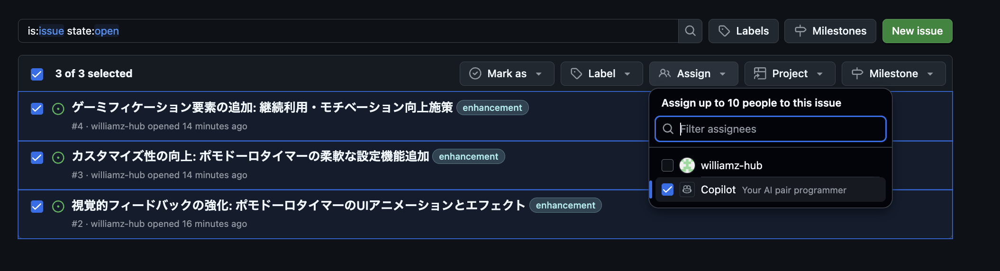
Expected Pull Request Results
Once the Cloud Agent is assigned, you can expect the following results:
- Automatic code implementation: Feature implementation based on each Issue's requirements
- Pull Request creation: Automatic PR creation after implementation is complete
- Comprehensive tests: Including both unit tests and UI tests
Pattern A: Enhanced Visual Feedback
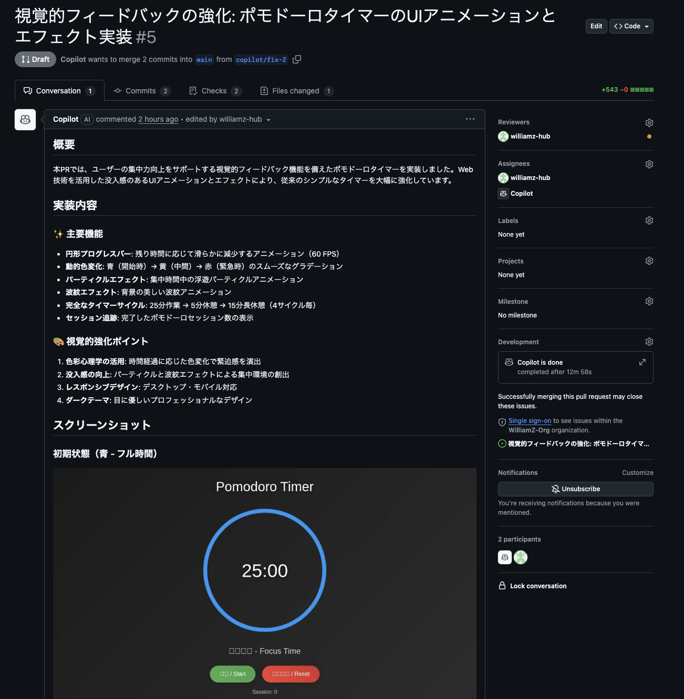
Pattern B: Improved Customizability

Pattern C: Gamification Elements

By combining GitHub Actions with Copilot, let's experience an Agentic Workflow that detects code changes and automatically updates documentation.
What is an Agentic Workflow?
An Agentic Workflow is a mechanism that leverages Copilot (AI) within GitHub Actions workflows to autonomously execute tasks in response to code changes. In this workshop, a workflow has been pre-configured to automatically update related documentation when changes are made to the Pomodoro timer code.
1. Merge the Pull Request into the Main Branch
Merge the Pull Request created in the previous step into the main branch.
- Go to your repository on GitHub
- Click the Pull requests tab
- Open the target Pull Request
- Click the Merge pull request button to merge

2. Verify the Workflow Execution
The Agentic Workflow was automatically triggered when you pushed the code.
- Go to your repository on GitHub
- Click the Actions tab
- Verify that the Pomodoro Documentation Sync workflow is running

This workflow automatically updates the documentation managed under pomodoro/docs/ based on the changes whenever there are diffs in the code under pomodoro/.
3. Review the Pull Request
Once the Actions run completes, a Pull Request to update the documentation is automatically created.
- Click the Pull requests tab
- Review the PR created by Copilot
- Review the documentation changes
4. Create Your Own Agentic Workflow
Now that you've seen the Agentic Workflow in action, let's create your own.
Run the following prompt in Agent Mode:
Please create a GitHub Agentic Workflow by referencing the following URL.
https://github.com/github/gh-aw/blob/main/create.md
The purpose of the workflow is as follows:
- It runs when code under copilotWebRelay is updated
- It updates the documentation under copilotWebRelay/docs based on the code under copilotWebRelay, ensuring that source code and documentation are always in sync
Commit the workflow file you created and create a Pull Request.
From here, you'll use the Copilot SDK to build Copilot Web Relay, a generative AI chat tool that runs in the browser, with a single prompt from Copilot CLI.
What is the Copilot SDK?
The Copilot SDK is an SDK for programmatically controlling GitHub Copilot CLI. It communicates with Copilot CLI via JSON-RPC, allowing you to integrate capabilities such as creating AI sessions, sending and receiving messages, and receiving streaming responses into your applications.
SDK Repository: https://github.com/github/copilot-sdk
What You'll Build
You'll build a web application that lets you chat with AI in real time from your browser:
- Frontend: A browser-based chat UI (React + TypeScript)
- Backend: A Node.js server that manages AI sessions using the Copilot SDK
- Real-time communication: Delivers streaming responses over WebSocket
Key Copilot SDK APIs
API | Description |
| Client that manages the connection to the CLI server |
| Creates a new conversation session |
| Sends a message |
| Receives streaming response chunks |
| Receives the final response |
| Detects when session processing is complete |
| Automatically approves all tool execution permissions |
| Generates the standard toolset for chat |
| Hook that runs before tool execution (used for input validation, transformation, and more) |
| Hook that runs after tool execution (used for logging, processing results, and more) |
Basic SDK Usage
import { CopilotClient, approveAll, createChatTools } from "@github/copilot-sdk";
const client = new CopilotClient();
await client.start();
const session = await client.createSession({
model: "gpt-5",
onPermissionRequest: approveAll,
tools: createChatTools(),
hooks: {
onPreToolUse: (input, invocation) => {
console.log(`Before tool execution: ${invocation.toolName}`, input);
},
onPostToolUse: (input, invocation) => {
console.log(`After tool execution: ${invocation.toolName}`, input);
},
},
});
session.on("assistant.message_delta", (event) => {
process.stdout.write(event.data.deltaContent);
});
await session.send({ prompt: "Hello!" });
Now that you understand the Copilot SDK overview, it's time to implement a browser-based AI chat tool with Vibe Coding.
Step 1: Launch Copilot CLI
Launch Copilot CLI in the VS Code terminal.
copilot
Step 2: Allow All Permissions
/allow-all
/allow-all is a command that grants all permissions at once for tool execution, file access, and external URL access to Copilot CLI.
Normally, Copilot CLI prompts the user for permission each time it reads or writes files, executes commands, or communicates externally for security purposes. Running /allow-all skips these confirmation prompts, allowing Copilot to autonomously create and edit files, install packages, start servers, and more.
Step 3: Select a High-end Model
/model
From the list of models, select the most powerful model (for example, Claude Opus 4.6). A high-end model with strong reasoning capabilities is effective for building a web application with multiple components.
Step 4: Switch to Autopilot Mode
Press Shift+Tab to switch Copilot CLI to Autopilot mode. In Autopilot mode, Copilot autonomously creates and edits files and executes commands without asking for confirmation, making it ideal for Vibe Coding large implementations all at once.
Step 5: Implement Everything at Once with a Single Prompt
Enter the following prompt in Copilot CLI. The /fleet command runs multiple agents in parallel to build a browser-based AI chat tool using the SDK all at once:
/fleet Using the Copilot SDK, build an AI chat web application that runs in a browser in the copilotWebRelay/ directory.
SDK reference: https://github.com/github/copilot-sdk
Requirements:
- Backend: Node.js + Express + WebSocket server
- Manage sessions with the Copilot SDK's CopilotClient
- Use model "gpt-5" with createSession(), and use approveAll for onPermissionRequest
- Stream responses to the client over WebSocket with session.on("assistant.message_delta")
- Notify the client of completion with session.on("session.idle")
- Frontend: React + TypeScript + Vite
- Modern chat UI (message input field, send button, and chat history display)
- Connect to the server with WebSocket and display streaming responses in real time
- Support Markdown rendering
- Development environment: Backend and frontend can be started simultaneously with npm scripts
- Verify that the application works
Hints If You Get Stuck
If errors occur during implementation, try the following:
- Share the error message directly with Copilot: Simply saying "Please fix this error" is often enough
- Check changes with
/diff: Verify there are no unintended changes - Switch models with
/model: Try a different model and retry
Once the Copilot Web Relay implementation is complete, use the review-related Copilot CLI commands to conduct code reviews with multiple AI models. The goal is to identify quality, security, and performance issues from the different perspectives of multiple models.
Key Commands for Reviews
Copilot CLI provides several commands that you can use for code reviews.
Command | Description |
| Run the code review agent to analyze changes |
| Select the AI model to use (Claude, GPT, Gemini, etc.) |
| Rewind the previous turn and revert file changes |
Step 1: Commit & Push the Code
In Copilot CLI, enter the following prompt to commit and push the implementation:
Stage all of the implemented Copilot Web Relay code with git add, commit it with an appropriate commit message, push it to the feature/copilot-web-relay branch, and create a pull request to the main branch.
Step 2: Review with Multiple Models & Comment on the Pull Request
Enter the following prompt in Copilot CLI to run reviews with multiple models and post the results as a PR comment all at once:
/review Please review the Pull Request with each of the opus4.6 and GPT5.4 models, summarize the results, and leave the results as a comment on the Pull Request
With this prompt alone, the following actions are performed automatically:
- Code review by Claude Opus 4.6
- Code review by GPT-5.4
- Integration and comparison of each model's review results
- Posting a review comment on the Pull Request
If there is a problem with the changes, you can use /undo to rewind the previous turn and revert the file changes.
Let's have Copilot explain the code of the Copilot SDK chat tool implemented through Vibe Coding to deepen our understanding. Then we'll find issues and implement improvements.
1. Request an Explanation of the Entire Codebase
First, let's get an overview of the implemented code. Enter the following prompt in Agent Mode:
Please review the entire codebase of the AI chat application under copilotWebRelay/ and explain the architecture, the role of each file, and the main processing flows. Focus especially on how the Copilot SDK is used (CopilotClient, createSession, and streaming responses).
The Copilot agent will automatically scan files in the project and explain the code structure and processing flows.
2. Identify Issues
Next, let's have Copilot identify issues from a code quality and security perspective:
Looking at the application under copilotWebRelay/ as a whole, what issues or areas for improvement do you see? Please analyze from the perspectives of design patterns, code quality, maintainability, and security.
You can also drill down into specific components:
Are there any issues with the backend WebSocket server and Copilot SDK session management? Please suggest improvements to error handling and resource management.
Are there any issues with the frontend WebSocket connection management or the display of streaming responses? Please check whether it follows React best practices.
3. Implement the Improvements
Let's have Copilot actually fix the issues found:
Please implement all of the improvements you suggested.
Copilot will propose changes directly to the code. Review the changes and use the "Keep" or "Undo" buttons in the chat to decide whether to accept them.
4. Verify Functionality
After implementing improvements, verify that the application continues to work correctly:
Please verify that the application works correctly after implementing the improvements. Start the backend, build the frontend, and verify operation in the browser.
What You Learned Today
In this workshop, you learned the following:
- Basic usage of GitHub Copilot
- Code explanation and improvement with Agent Mode
- Spec-driven development — controlling AI while implementing
- AI-driven development using powerful models and tools
- Building AI-powered applications with the Copilot SDK
Next Steps
- Try using Copilot in your actual projects
- Take on more complex application development
- Keep up with Copilot's new features
- Deploy the Copilot Web Relay to your own environment
Resources
Great work!